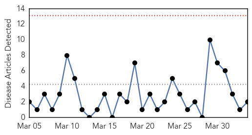
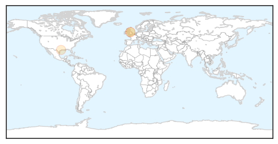
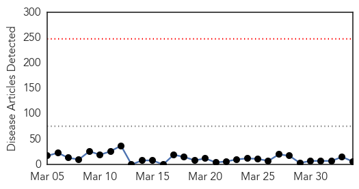

Meningitis
30-Day Web Trend
0 alerts, 0 warnings

30-Day Twitter Trend
1 alerts, 0 warnings

Article Locations
Article Confidences

Top Articles:
Top Tweets:
-
No tweets found for Apr 03, 2015
Measles
30-Day Web Trend
0 alerts, 0 warnings

30-Day Twitter Trend
4 alerts, 0 warnings

Article Locations

Article Confidences

Top Articles:
- 0.974
- 2 New Cases Linked To Infected Air China Passengers
- 0.928
- Vancouver: Measles detected in Burnaby, linked to Beijing flight
- 0.791
- Suspected measles case identified at Vancouver high school
- 0.705
- Vancouver School Board sets up immunization clinic after student contracts measles
- 0.702
- Two million measles vaccines delivered to Sudan for mass immunisation
- 0.665
- Over 35,000 children to be vaccinated against measles in South Sudan
Top Tweets:
-
No tweets found for Apr 03, 2015